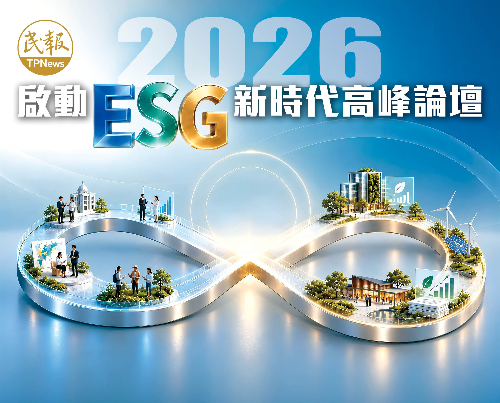
掃描 QR Code 取得本場論壇的簡報資料。
論壇當天開放。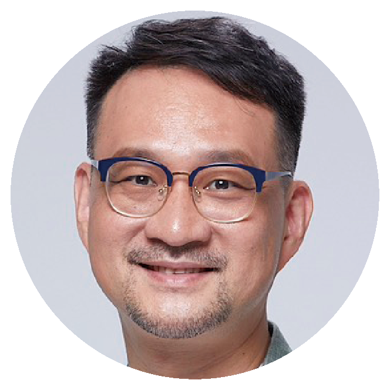
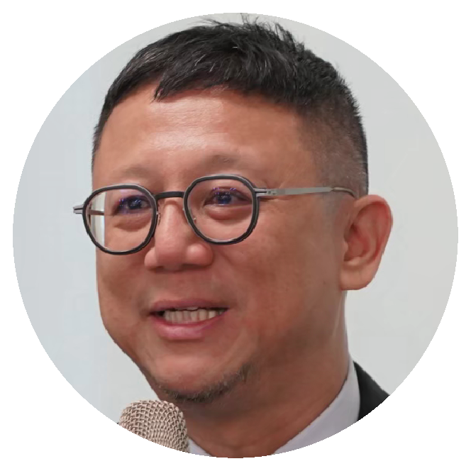
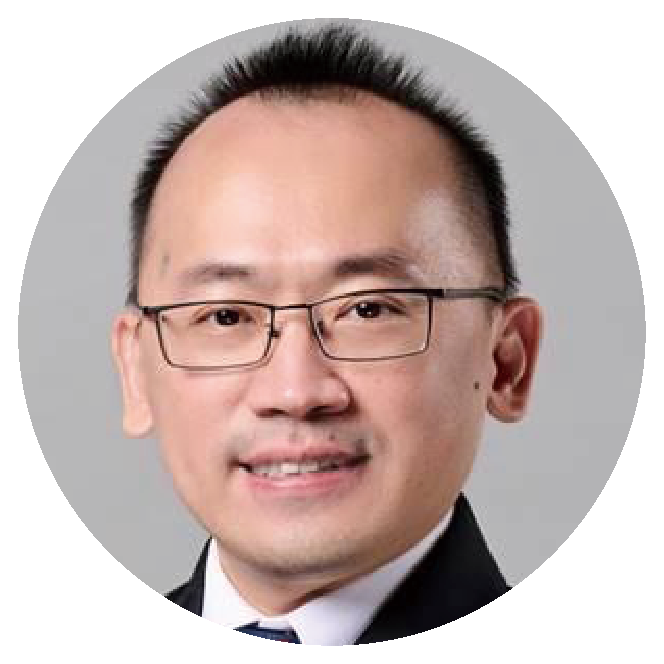
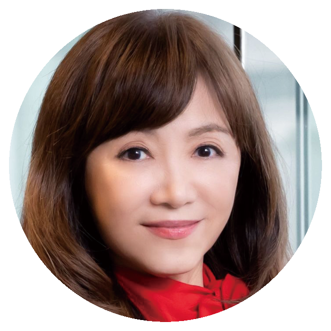
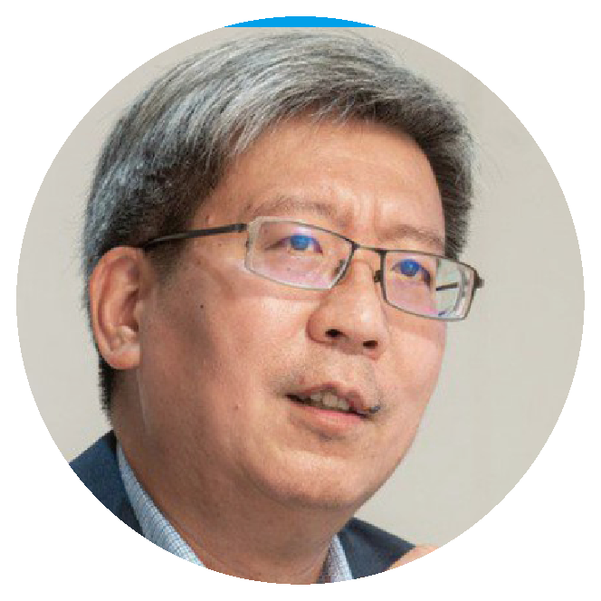
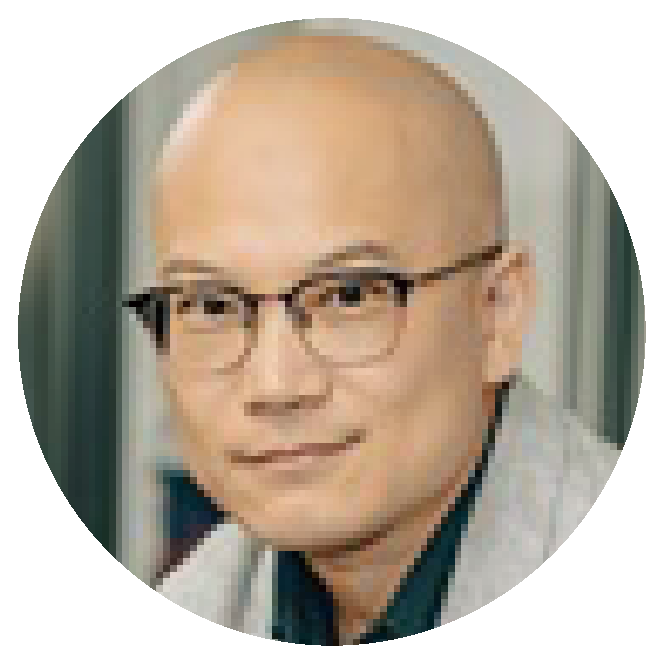
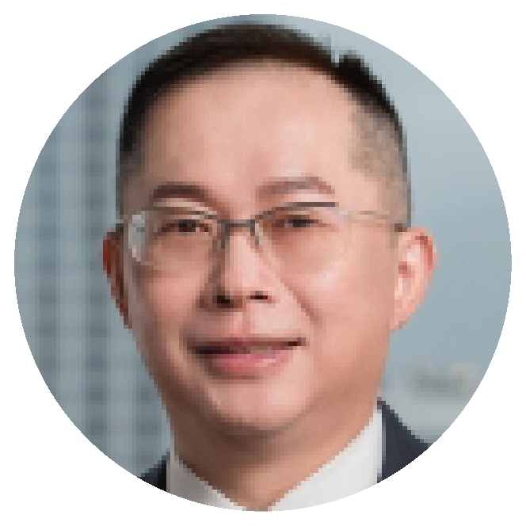
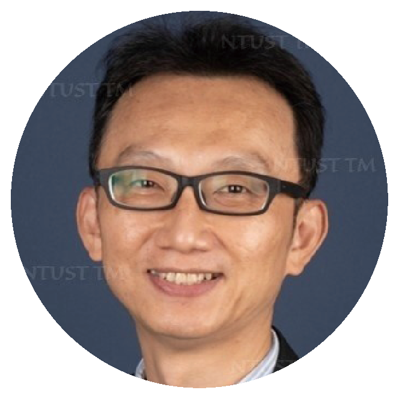
日期：2026年9月30日（三）
時間：13:30 開放入場，14:00〜17:00
地點：集思交通部國際會議中心-國際會議廳3樓（臺北市中正區杭州南路一段24號3樓）
報名費用：NT$2,000 / 人
付費方式：匯款
收款銀行：台新銀行 復興分行（銀行代號：812）
收款戶名：民報媒體股份有限公司
收款帳號：20640-168-168-888
* 請於提交報名表後3天內完成匯款，如未完成付費則視同未完成報名。
* 匯款衍生之相關費用（如手續費）須由報名者自行負擔。
報名連絡電話：02-2721-0860
報名連絡信箱：people.tw.news2022@gmail.com
掃描 QR Code 報名
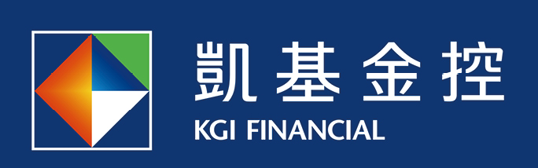
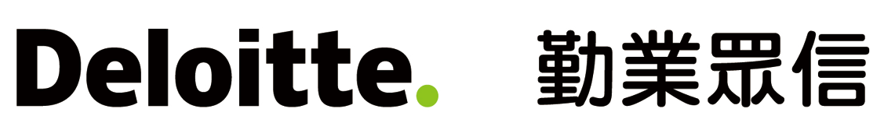
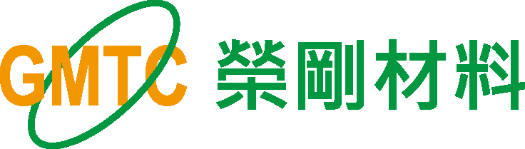